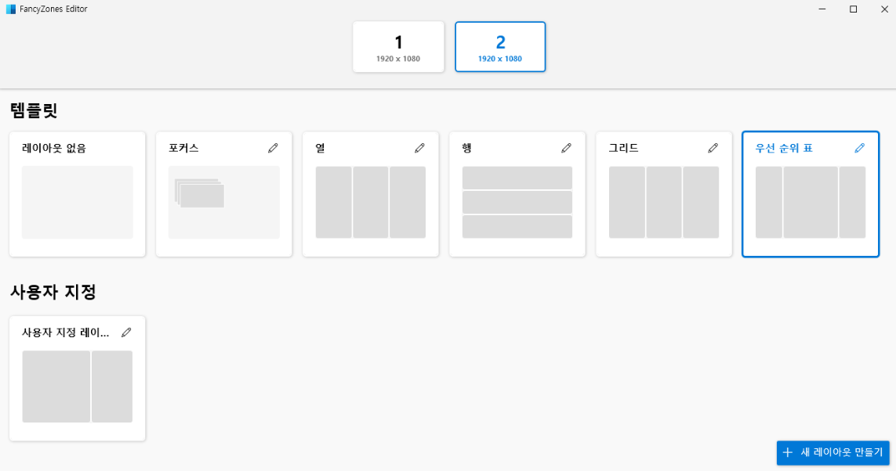
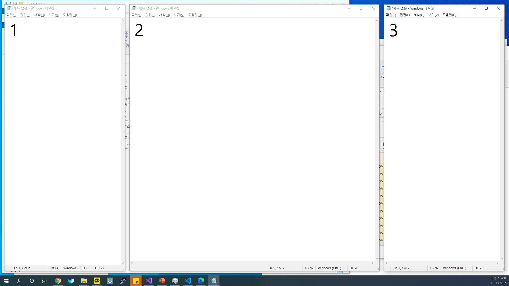

PowerToys의 두번째 기능은 FancyZones이다. 이 기능은 특히 모니터를 두대 이상 사용하는 사람들에게는 더 편리하게 사용 될 기능이다. 삼분할, 혹은 위 아래 분할을 기존 Win + 방향키 세팅보다 다양하게 원하는 모양으로 사용자 설정이 가능한 셈이다.

설정 후 창을 Shift를 누른 채 드래그하면 설정된 창의 크기애 맞게 사이즈가 변경된다.
